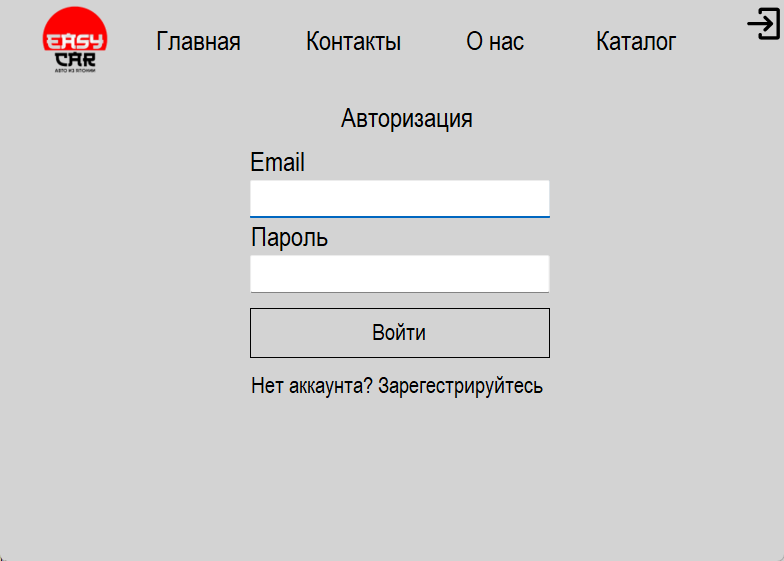
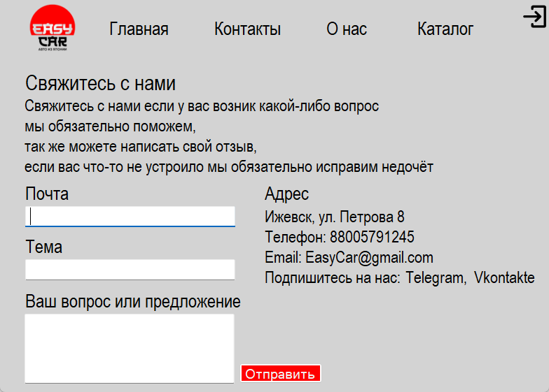
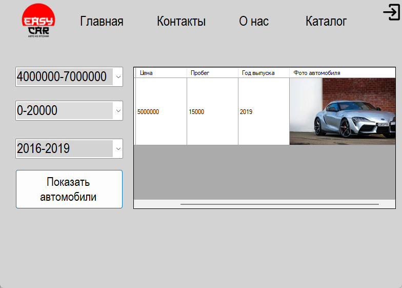

EasyCar - Документация
Описание проекта
EasyCar - это десктопное приложение для управления арендой автомобилей, разработанное на платформе Windows Forms (.NET). Приложение предоставляет удобный интерфейс для управления автопарком, клиентами и операциями аренды автомобилей.
Основные возможности:
- Управление базой автомобилей (добавление, редактирование, удаление)
- Учет клиентов и их данных
- Каталог автомобилей
- Форма обратной связи для клиентов
- Оформление и отслеживание аренды
- Ведение истории операций
- Локальное хранение данных в SQLite
Руководство по использованию
Основные операции:
-
Управление автомобилями:
Работа с автомобилями:
- Добавление нового автомобиля
- Редактирование информации
- Удаление автомобиля
-
Работа с клиентами:
Управление базой клиентов:
- Регистрация новых клиентов
- Поиск по базе данных
-
Просмотр каталога автомобилей
- Просмотр каталога автомобилей
- Фильтры для каталога
- Заказ автомобиля
- Просмотр информации о автомобиле
Установка и настройка
Системные требования:
- Windows 7/8/10/11
- .NET Framework 4.7.2 или выше
- SQLite
- Минимум 2 ГБ оперативной памяти
- 100 МБ свободного места на диске
Установка приложения:
-
Скачивание проекта:
Загрузите последнюю версию программы из репозитория
-
Запуск установки:
EasyCar.exe
Разработка и модификация:
-
Клонирование репозитория:
git clone [URL репозитория] -
Открытие проекта:
EasyCar.sln -
Структура проекта:
- Forms/ - формы приложения
- Models/ - модели данных
- Services/ - бизнес-логика
- Data/ - работа с базой данных
- Utils/ - вспомогательные классы
Примеры работы программы
  Репозиторий проекта
Исходный код проекта доступен на GitHub: Ссылка на репозиторий
В репозитории вы найдете полный исходный код, инструкции по сборке и примеры использования.